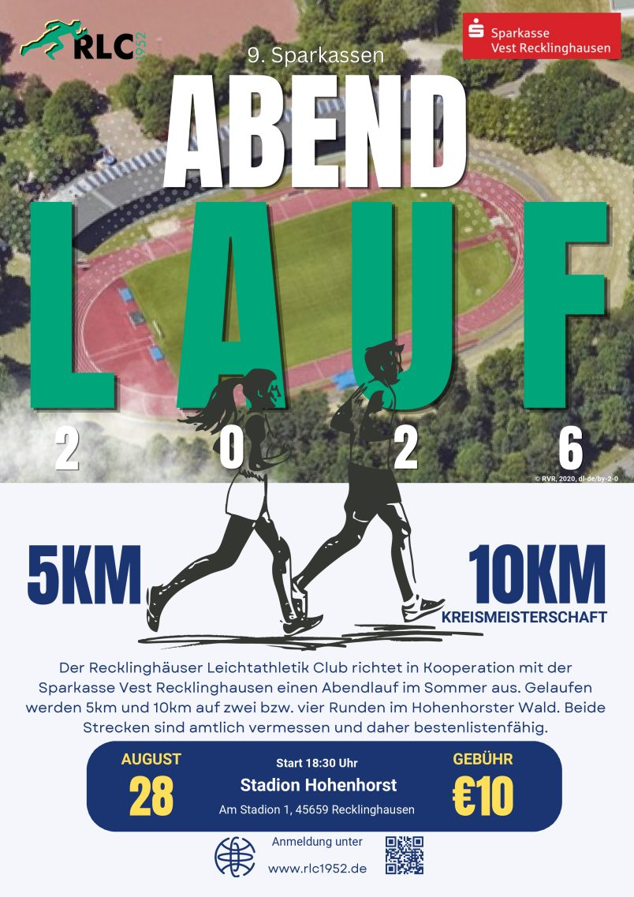
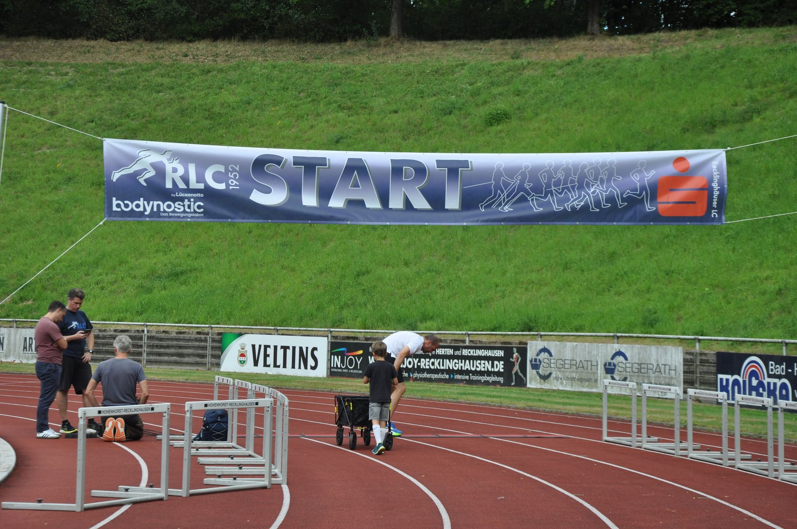
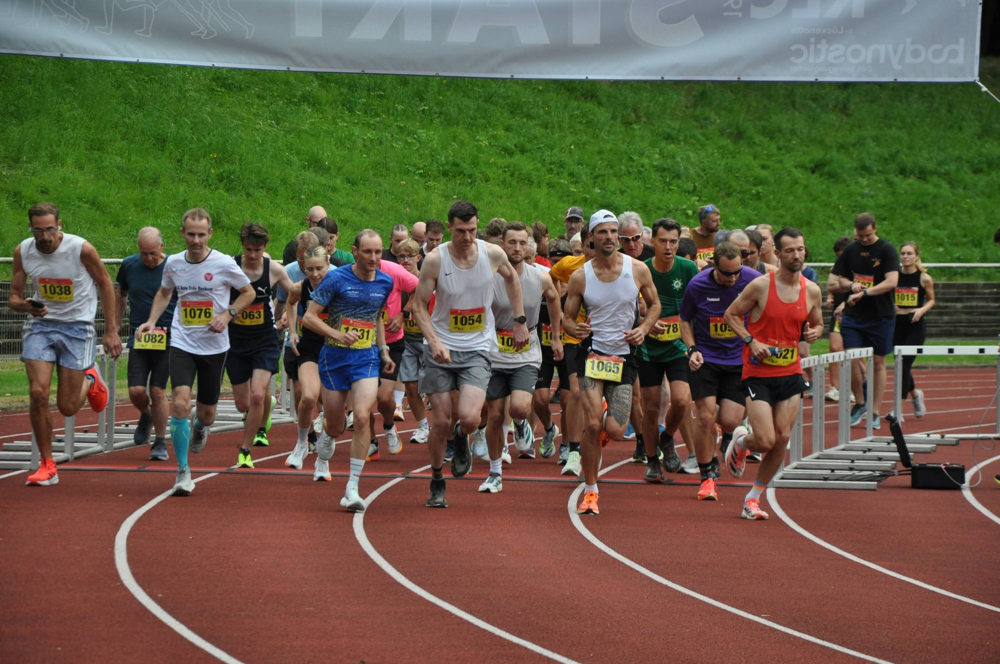
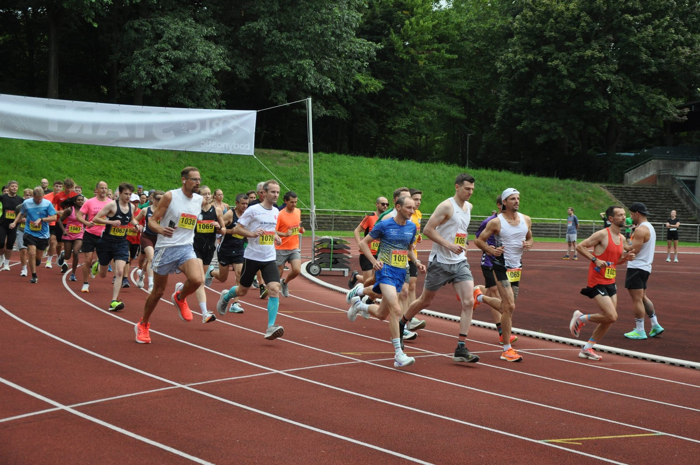
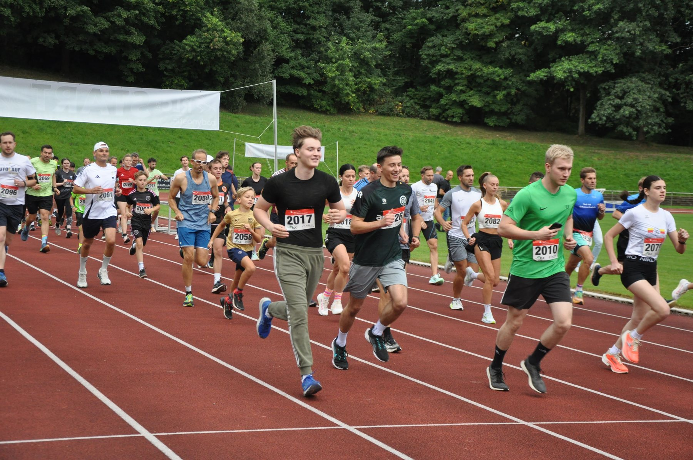
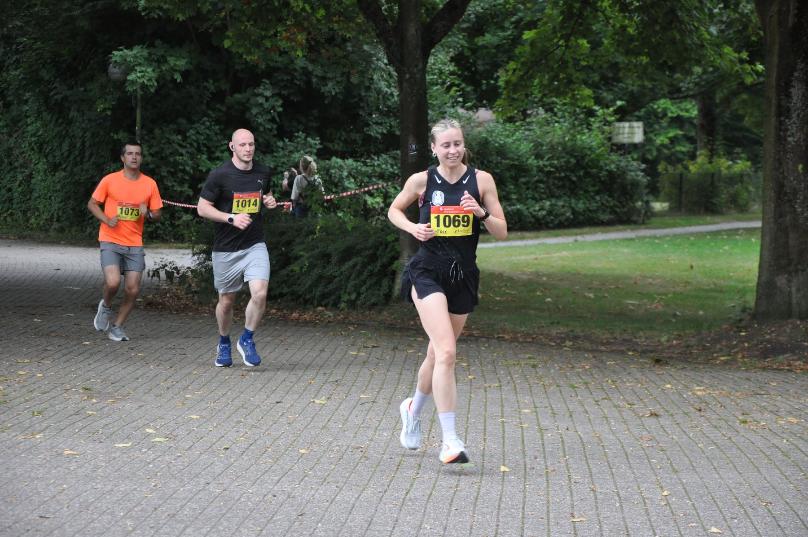
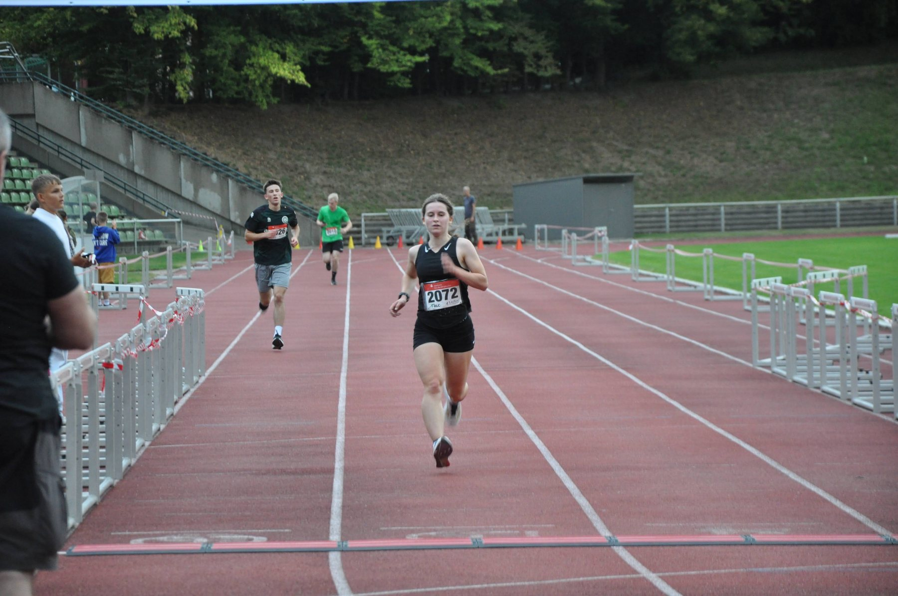
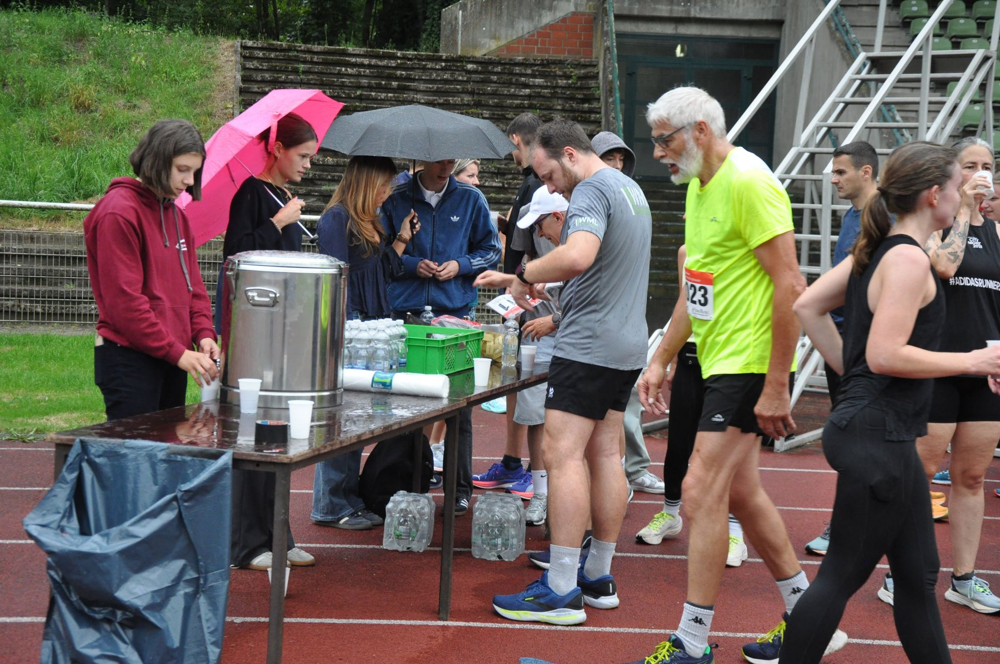
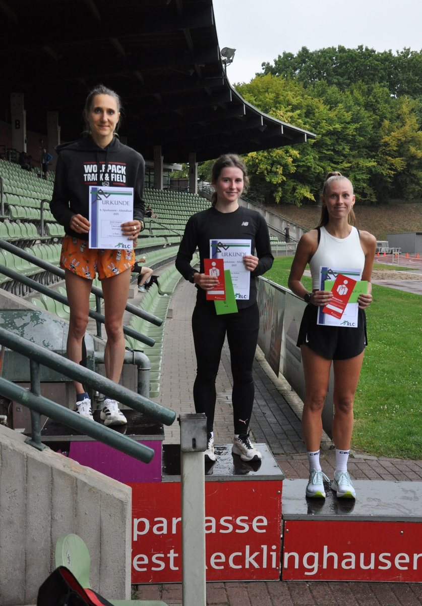
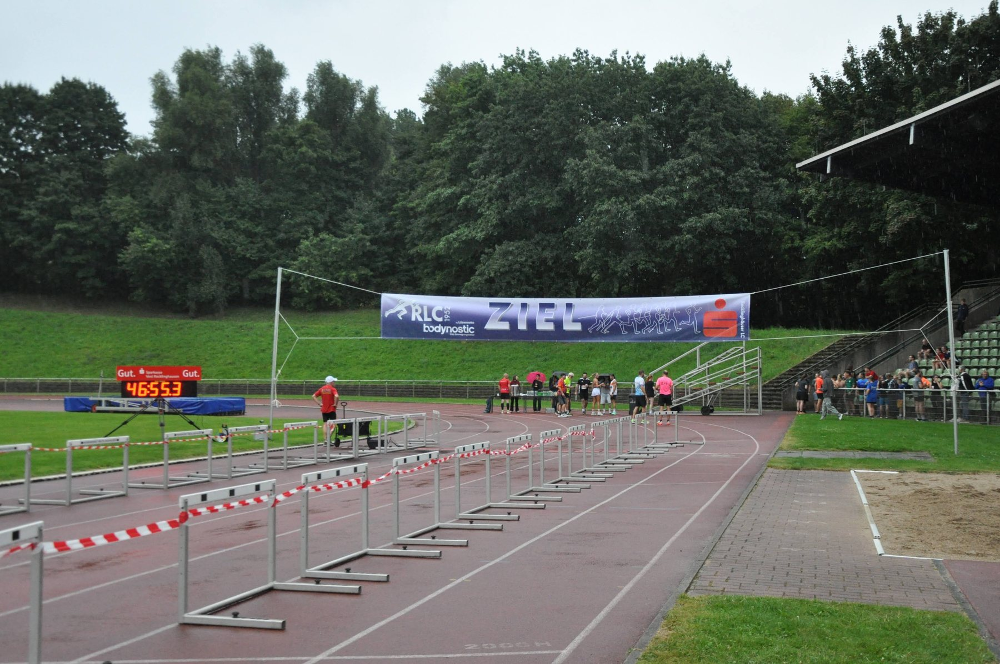

Die Anmeldung läuft zentral über RaceResult.
RaceResult öffnen
Veranstaltung
9. Sparkassen Abendlauf am 28.08.
Der Sparkassen Abendlauf am 28.08.2026 verbindet Stadion, Hohenhorster Wald und Vereinsatmosphäre. Gelaufen werden 5 km und 10 km, die 10 km zugleich als Kreismeisterschaft. Anmeldung, Flyer und Streckenpläne sind hier direkt verlinkt.

Beschreibung
Laufabend im Stadion Hohenhorst.
Der 9. Sparkassen Abendlauf startet am Freitag, 28. August 2026, um 18:30 Uhr am Stadion Hohenhorst. Zur Auswahl stehen 5 km und 10 km durch den Hohenhorster Wald; die 10 km werden zugleich als Kreismeisterschaft gewertet.
Die Strecken sind laut Flyer offiziell vermessen und bestenlistenfähig. Die Startgebühr beträgt 10 Euro.
Anmeldung & Strecken
Online anmelden und Strecke prüfen.
Der aktuelle Abendlauf-Flyer liegt als PDF bereit.
Flyer öffnenDie 5-km- und 10-km-Strecken sind als PDF verlinkt.
Bilder
Motive aus Stadion, Strecke und Zielbereich.









Kontakt
Direkt anmelden oder Rückfrage stellen.
Die Anmeldung läuft über RaceResult. Für organisatorische Rückfragen bleibt der zentrale Kontaktweg des Vereins verfügbar.